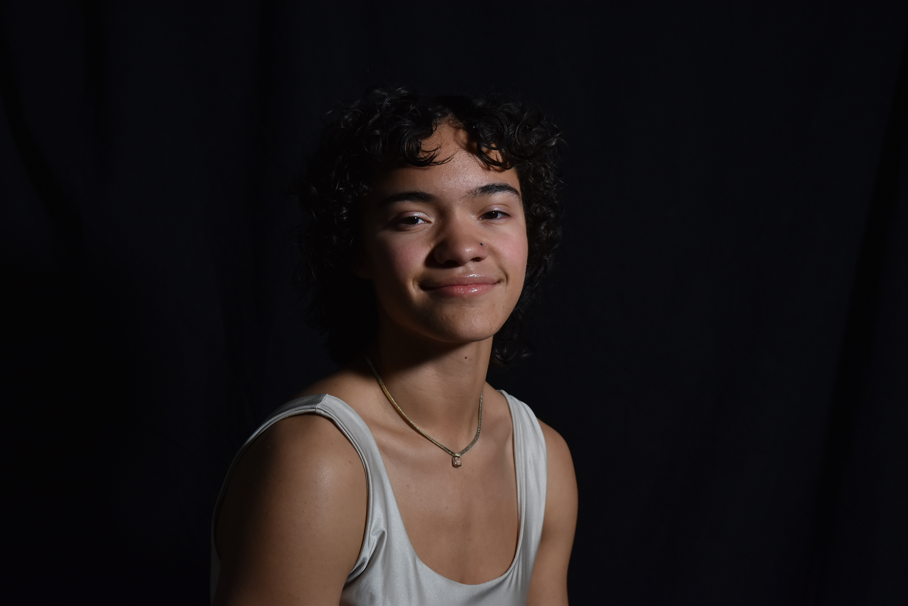

01 — A LITTLE ABOUT ME
Curious by nature,
creative by design.
I'm currently a student in Creative Technology and Design Engineering at CU Boulder.
I currently have three jobs. I work as a server at the Champion Center, which is the athletic dining hall. I'm also a Learning Assistant for the class Image in the ATLAS Institute, and an intern in the SPUR program's Discovery Learning Apprenticeship.
My research focuses on making type for letterpress more accessible and affordable for the TYPO Lab, also in the ATLAS Institute.
I'm attaining a minor in Art Practices and hope to one day commission my own artwork after spending some years learning design under knowledgeable professionals.
A little more about my experience ↗02 — THINGS THAT MAKE ME, ME
Always making,
always exploring.
From creative technology to art, food, gardening, and everything in between, I'm happiest when I'm learning something new or making something with my hands.